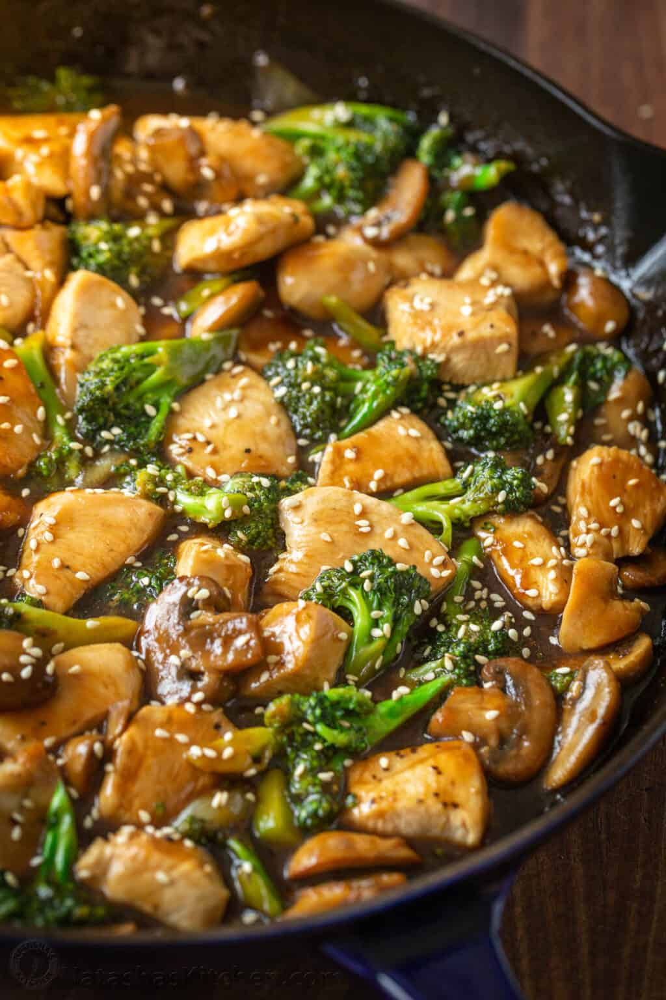

Chicken Broccoli
Home

Description:
Chicken and Broccoli Stir Fry satisfies the craving for takeout, and you'll feel good about serving this
to your family. It's healthier than going out, and it's simple to make into a meal served over cooked
white ricebrown rice, or even cooked quinoa.
Ingredients
Servings: 4 People
Chicken and Broccoli
- 1 lb chicken breast, (boneless skinless), cut into 3/4" pieces
- 2 tbsp cooking oil, (I used extra light olive oil), divided
- 1 lb broccoli, cut into florets (about 5 cups)
- 1 small yellow onion, sliced into strips
- 1/2 lb white button mushrooms, thickly sliced
Stir Fry Sauce Ingredients
- 2/3 cup low sodium chicken broth
- 3 tbsp low sodium soy sauce (use Tamari for gluten free), or add to taste
- 2 tbsp light brown sugar, packed (or honet to taste)
- 1 tbsp corn starch
- 1 tbsp sesame oil
- 1 tsp fresh ginger, peeled and grated (lightly packed)
- 1 tsp garlic (2 small cloves), grated
- 1/4 tsp black pepper, plus more to season chicken
Steps
- Make the Sauce - In a small bowl, combine all of the sauce ingredients and whisk to dissolve sugar and corn starch (warm broth will help dissolve the sugar faster). Set sauce aside.
- Prepare Chicken - cut chicken into small bite-sized pieces (no more than 3/4” thick) and season lightly with pepper. Heat a large heavy skillet or wok over medium-high heat. Add 1 Tbsp oil. Add chicken in a single
layer and let it sit undisturbed for 1 minute to get a good sear then stir fry for another 5 minutes or until golden brown just cooked through then remove to a bowl and loosely cover to keep warm.
- Stir Fry Veggies - In the same skillet, add another 1 Tbsp oil along with broccoli florets, sliced onion and sliced mushrooms.
Stir fry 3 minutes or until mushrooms are softened and broccoli is crisp-tender then reduce heat to medium/low.
- Add Sauce - Give the sauce a quick stir in case there was any settling of starch and pour all of it over the vegetables.
Simmer 3-4 minutes or until sauce is thickened and garlic and ginger are mellowed in flavor. To thin the sauce, add water a tablespoon at a time.
- Combine and Serve - Return chicken to the pan and stir another 30 seconds or until heated through. Add more soy sauce to taste if needed and serve over hot rice.